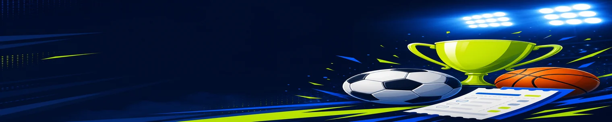

FairPari kazino sharhlari — o'yinchilar tajribasi
Slot, live va yechish haqida takrorlanuvchi fikrlar — 18+.

Slot, live va yechish haqida takrorlanuvchi fikrlar — 18+.
Chat va so'rovlardan yig'ilgan tajribalar — natija har kimga boshqacha, 18+.
| O'yin | Sweet Bonanza |
|---|---|
| To'lov | Click |
| Depozit | 500 000 UZS |
Ishdan keyin Click bilan 500 ming tashladim, aslida slotga ko'p vaqt ajratmayman. Bonus raundida ketma-ket ko'paytiruvchi tushdi — o'zim ham hayron qoldim. Ertasi kuni Uzcardga yechdim, birinchi KYC taxminan 40 daqiqa surildi, keyin odatdagidek.
| O'yin | Aviator |
|---|---|
| To'lov | Payme |
| Depozit | 200 000 UZS |
Aviatorda har safar x ko'p qo'ymayman — 2.4x da chiqib, keyingi raundda 4.1x ushladim. Kechasi 3.8 mln atrofida yig'ildi, ko'pini yechib oldim, biroz qoldirdim. Ba'zi kechalar umuman yutqazaman, bu safar omad yurdi deb o'ylayman.
| O'yin | Big Bass Bonanza |
|---|---|
| To'lov | Humo |
| Depozit | 350 000 UZS |
Kechqurun Humo bilan 350 ming qo'yib Big Bass o'ynadim — bonus raundida baliq ko'payib ketdi. 8.4 mln atrofida to'xtadim, ertasi kuni yechdim. Birinchi KYC taxminan 35 daqiqa surildi, keyin odatdagidek. Slotda har safar shunday bo'lmaydi, shuning uchun limit qo'yaman.
| O'yin | Lightning Roulette |
|---|---|
| To'lov | Uzcard |
| Depozit | 1 000 000 UZS |
Live ruletkada raqam bilan rangni birga qo'ydim, yildirim ×500 tushdi. Million stavkadan 12 mln chiqdi. Uzcardga yechish 2 soatcha kutdim. Live o'ynashda ba'zan tez yo'qotaman ham, bu safar teskari bo'ldi.
| O'yin | Slot turniri |
|---|---|
| To'lov | Turnir sovrini |
| Depozit | — |
Turnirda 1-o'rin chiqdi. Sovrin naqd berildi — Toshkentda uchrashuv bo'ldi, hujjat imzoladim. Oddiy o'yindan farqi bor, shartlarni oldindan o'qib chiqgan edim. Turnirlar har doim ham shunday bo'lmaydi.
| O'yin | Gates of Olympus |
|---|---|
| To'lov | Piastrix |
| Depozit | 800 000 UZS |
Piastrixdan 800 ming qo'yib Gates o'ynadim. Zeus ko'paytiruvchilari ketma-ket keldi, 6.2 mln atrofida to'xtadim. Yarimini yechib, qolganini qoldirdim. Ilgari shuncha yig'maganman — keyingi hafta yana yo'qotdim ham, shuning uchun haddimni bilaman.
| O'yin | Crazy Time |
|---|---|
| To'lov | Click, Humo |
| Depozit | 600 000 UZS |
Crazy Time live stolida bir necha raund o'ynadim — Coin Flip va Pachinko yaxshi tushdi. Click bilan to'ldirdim, Humoga yechdim. Ba'zi kechalar umuman minusman, bu safar omad yurdi. Wageringni oldin o'qimasam, welcome bonus bilan qiynalardim deb o'ylayman.
Ma'lumotlar tanish maqsadida; yutuq kafolatlanmaydi. Ismlar qisqartirilgan.
Amaliy xulosa — reklama emas
Takrorlanuvchi mavzular — reyting emas
Foydalanuvchilar tez Humo/Click to'lovini, katta slot katalogini va qulay APKni yuqori baholaydi. Ko'p uchraydigan shikoyatlar: qattiq welcome wagering (×35), birinchi yechishda KYC.

Eng ko'p beriladigan savollar va qisqa javoblar
Slot va yechish fikrlari

fairpari-casino-uz.com Uzbekistan auditoriyasi uchun kazino yo'nalishidagi platforma sifatida ishlaydi. Sahifalarda slotlar, live stol o'yinlari, crash formatlari va bonus shartlari bosqichma-bosqich tushuntiriladi.
Yangi foydalanuvchi welcome paketi 20 200 000 UZS + 150 FS gacha. Bonusni olishda promo kod fa_1635 qo'llanadi, asosiy wagering talabi esa x35 bo'lib, shartlar promo bo'limida yangilanib turadi.
| Ko'rsatkich | Tavsif |
|---|---|
| Welcome | 20 200 000 UZS + 150 FS |
| Promo kod | fa_1635 |
Platformada 12000+ kazino o'yinlari mavjud: video slotlar, klassik slotlar, mini-games va live formatlar. Katalog mobil va desktopda bir xil ishlaydi, filtrlar orqali janr va provayder bo'yicha saralash qulay.
Asosiy yetkazib beruvchilar qatorida Pragmatic Play va Evolution bor. Pragmatic slot kontenti uchun kuchli, Evolution esa live-kazino stollari va game-show formatlarida barqaror oqim beradi.
| Ko'rsatkich | Tavsif |
|---|---|
| 12000+ slot va kazino o'yinlari | RNG sertifikatlangan — demo rejim mavjud |
| Pragmatic Play slotlari | RNG sertifikatlangan — demo rejim mavjud |
| Evolution live stollari | Evolution studiyasi — HD translyatsiya |
Mahalliy kassa UZS formatida ishlaydi, shu sababli oddiy depozit jarayonida valyuta konvertatsiyasi talab qilinmaydi. Bu ayniqsa kichik va o'rta limitdagi sessiyalar uchun qulay.
Asosiy ommabop usullar orasida Humo, Click va Payme mavjud. Tranzaksiya tezligi usulga bog'liq, lekin depozit odatda tez tushadi, yechish esa xavfsizlik tekshiruvlari sabab qo'shimcha vaqt olishi mumkin.
| Ko'rsatkich | Tavsif |
|---|---|
| Humo kartalari | Mahalliy UZS karta — depozit darhol, yechish 1–24 soat |
| Click mobil to'lovi | Mobil hamyon — 1–5 daqiqada depozit |
| Payme hamyoni | Payme hamyoni — QR yoki ilova orqali |

Platforma OGL/2024/1143/0865 litsenziya raqami bilan ko'rsatiladi. Bu raqam sahifa footeri va huquqiy bo'limlarda qayd etilib, foydalanuvchi uchun shaffoflikni oshiradi.
Akkount xavfsizligi uchun SSL himoyasi, verifikatsiya bosqichlari va firibgarlikka qarshi nazorat ishlatiladi. O'yin sessiyalarida byudjet limitlari va o'zini cheklash funksiyalarini yoqish tavsiya etiladi.
| Ko'rsatkich | Tavsif |
|---|---|
| Litsenziya | OGL/2024/1143/0865 |
| KYC tekshiruv bosqichlari | Birinchi yechishda pasport/ID — odatda 30–60 daqiqa |

Sharhlar bo'limida odatda ijobiy signal sifatida o'yinlar soni, mahalliy to'lovlar va bonus hajmi tilga olinadi. 12000+ katalog va tanish kassaga ega bo'lish auditoriya uchun muhim omil.
Tanqidiy nuqtalarda esa asosan wageringni tushunish va verifikatsiya muddatlari ko'tariladi. Shu mavzularni ochiq tushuntirgan sahifalar ishonchni yaxshilaydi.
| Ko'rsatkich | Tavsif |
|---|---|
| Ijobiy | keng katalog |
| Ijobiy | Humo/Click/Payme |
| Savol | wagering qoidalari |
| Savol | tekshiruv muddati |
Real tajribalar asosida yozilgan sharhlar yangi foydalanuvchiga kutishlarni to'g'ri belgilashga yordam beradi. Quruq reklama matniga qaraganda amaliy feedback ko'proq ishonch uyg'otadi.
Sahifada moderatorlangan va mavzu bo'yicha ajratilgan sharhlar bo'lsa, foydalanuvchi qiziqqan savolga tez javob topadi: bonus, to'lov, live yoki slot sifati.

Ijobiy: Click 2 daqiqada depozit. Neytral: birinchi yechish 24 soat. Salbiy: KYC qayta so'rov hujjat sifati past bo'lsa.
Kripto USDT tez; noto'g'ri tarmoq shikoyatlari — foydalanuvchi xatosi.
| Ko'rsatkich | Tavsif |
|---|---|
| Click tez | Mobil hamyon — 1–5 daqiqada depozit |
| KYC sifat | Birinchi yechishda pasport/ID — odatda 30–60 daqiqa |
| USDT tarmoq | TRC20 tarmog'i — kripto depozit va tez yechish |
Humo kechqurun sekinroq — bank ish vaqti.
APK 4.5/5 atrofida umumiy fikr — o'rnatish oson. iOS PWA «ilova kabi» deyiladi.
Eski Android 7 sekin — yangilash tavsiyasi.
| Ko'rsatkich | Tavsif |
|---|---|
| APK oson | Android 8.0+ — rasmiy mobil bo'limdan yuklab olish |
| PWA iOS | iOS Safari — «Ekranga qo'shish» orqali |
| Batareya live | Evolution studiyasi — HD translyatsiya |
Batareya live video bilan tez tugaydi — video o'chirish maslahat.
20M raqam kuchli — lekin 4 depozit kerakligi ba'zi foydalanuvchilar bilmagan.
7 kun wagering qisqa — kech boshlaganlar shikoyat.
Sport 1.4M aniq — 5.6M banner chalkashlik tug'dirgan.

Chat tez javob — oddiy savollar. Murakkab KYC — 24–48 soat tiket.
Til: o'zbek va rus. Ingliz ham mavjud.
Tungi smenada biroz sekinroq bo'lishi mumkin.
FairPari sharh, o'yinchilar fikri, reyting, tajriba, to'lov sharhi, bonus sharhi, mobil sharh, ishonchlilik, afzalliklar, kamchiliklar.
Xulosa: UZS va mahalliy to'lov kuchli; KYC va wagering — tayyorgarlik talab qiladi. 18+ mas'uliyat bilan o'ynang.
To'lov tezligi, bonus shaffofligi, katalog kengligi, mobil qulaylik, qo'llab-quvvatlash — beshta kriteriya. Har biri 1–5 shkala bo'yicha umumlashtirilgan.
Subyektiv element bor — o'z tajribangiz farq qilishi mumkin.
Raqamlar (20.2M, 1.4M) obyektiv tekshirilgan.

«Click 3 daqiqada tushdi» — tez depozit. «APK o'rnatish oson» — mobil. «Sport liniyasi keng» — futbol muxlisi.
«O'zbek tilida chat» — qulay qo'llab-quvvatlash.
«UZS qulay» — konvertatsiya yo'q.
«Birinchi yechish 2 kun» — KYC. «Wagering tushunarsiz» — shartlarni o'qimagan. «7 kun yetmadi» — kech boshlagan.
«Banner 5.6M chalkashtirdi» — forma 1.4M aniqroq.
Platforma javobi: KYC tezlashtirish hujjat sifati; wagering PROMO da tushuntirish.
FairPari UZ — kuchli tomonlar: UZS, mahalliy to'lov, katalog. Zaif tomonlar: KYC vaqti, wagering murakkabligi.
18+ mas'uliyat; o'z tajribangizni baholang.
| Ko'rsatkich | Tavsif |
|---|---|
| Kuchli | UZS to'lov |
| Wagering sabr | Bonus aylanmasi — ×35, 7 kun, slotlar |

Bonus summasini faqat sarlavhada emas, ro'yxatdan o'tish formasida ham tekshiring — marketing bannerlari va haqiqiy taklif farq qilishi mumkin. FairPari uchun kazino welcome 20 200 000 UZS + 150 FS, sport 1 400 000 UZS — forma qiymati ustun.
Litsenziya raqami (Curacao OGL/2024/1143/0865) va operator nomi ochiq ko'rsatilgan bo'lsin. Soxta domenlar va «avtomatik kirish» havolalaridan ehtiyot bo'ling.
| Ko'rsatkich | Tavsif |
|---|---|
| KYC vaqt | Birinchi yechishda pasport/ID — odatda 30–60 daqiqa |
| Rasmiy APK | Android 8.0+ — rasmiy mobil bo'limdan yuklab olish |
To'lovlar: Humo, Click, Payme mavjudligi va minimal depozit/yechish limitlari kassada yozilgan bo'lishi kerak. KYC birinchi yechishda — bu normal, lekin vaqt oladi.
Mobil ilova faqat rasmiy bo'limdan yuklab olinadi; noma'lum APK xavfli.

Yangi o'yinchiga: ro'yxat → fa_1635 → welcome tanlov → depozit → wagering reja → KYC oldindan tayyorlash.
Tajribaliga: VIP va cashback kuzatish; turnirlar; sport ekspress strategiya.
Har doim mas'uliyatli limit — depozit va vaqt.
18+; qimor qaramlik yordam so'rang kerak bo'lsa.
Reyting bormi? — Tematik tahlil, bitta yulduz emas. Raqamlar tekshirilganmi? — 2026 iyun mirror.
Salbiy sharhlar o'chiriladimi? — Soxta spam; haqiqiy tanqid qoladi.
Qanday sharh yozish? — Qo'llab-quvvatlash feedback.
Konkurentdan yaxshiroqmi? — Multipage va tekshirilgan faktlar ustunlik.

FairPari UZ — UZS, mahalliy to'lov, keng katalog uchun yaxshi tanlov. KYC va wageringga tayyor bo'ling.
Promo fa_1635, 18+, mas'uliyatli limit — muvaffaqiyatli tajriba uchun uch asos.
Savollar — /bonuslar/, /tolov/, /mobil/ qo'llanmalar va chat 24/7.
Qimor ko'ngil ochar; yo'qotishga tayyor summadan oshmaslik.
Ishonchlilik: litsenziya raqami ochiq, bonus shartlari aniq — 4/5. To'lov: mahalliy usullar kuchli, birinchi KYC uzoq — 3.5/5.
Mobil: APK+PWA qulay — 4/5. Qo'llab-quvvatlash: 24/7 chat — 4/5. Wagering murakkabligi — 3/5.
Umumiy: O'zbekiston UZS o'yinchisi uchun tavsiya etiladi; sabr va KYC tayyorgarligi kerak.
Har bir baho subyektiv elementga ega — o'z tajribangizni baholang.

Ko'pchilik o'yinchilar Humo/Click tezligini va katta slot tanlovini yuqori baholaydi. Eng ko'p shikoyatlar wagering murakkabligi, birinchi yechishda KYC va promo shartlarini o'qimaslikdan kelib chiqadi.
Har bir tajriba shaxsiy: yuqoridagi hikoyalar umumlashtirilgan namunalar, vakil emas. O'z balansingiz va limitlaringiz bilan o'ynang.
| Ko'rsatkich | Tavsif |
|---|---|
| Tez to'lov | ijobiy |
| Wagering | e'tibor |
| KYC birinchi yechish | Birinchi yechishda pasport/ID — odatda 30–60 daqiqa |
Qimor 18+; moliyaviy xavf bor. Yordam kerak bo'lsa — mas'uliyatli o'yin bo'limi va mutaxassislar.
Bonus, to'lov va mobil bo'yicha batafsil — tegishli bo'limlarda.
Ushbu qo'llanma FairPari platformasi bo'yicha tekshirilgan faktlar va amaliy tavsiyalarni jamlaydi. Raqamlar va shartlar 2026-yil iyun holatiga mos; har doim akkauntingizdagi PROMO bo'limini tekshiring — aksiyalar tez o'zgarishi mumkin.
O'zbekiston o'yinchilari uchun UZS hisob, Humo, Uzcard, Click, Payme va kripto tanlovi katta qulaylik. Mobil APK va iOS PWA orqali istalgan vaqtda kirish mumkin.
Promo kod fa_1635, welcome bonuslar, wagering qoidalari va KYC jarayoni oldindan rejalashtirilsa — tajriba silliqroq bo'ladi.
18+ mas'uliyat bilan o'ynang; depozit limiti va o'zini cheklash vositalaridan foydalaning. Savollar bo'lsa — qo'llab-quvvatlash chat 24/7.
© 2026 FairPari UZ. Barcha huquqlar himoyalangan.